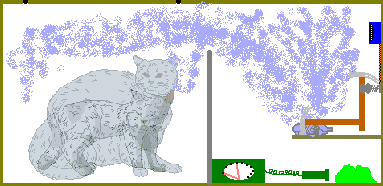

The Copenhagen interpretation of quantum physics, introduced in the
previous chapter, met with considerable resistance. Many
physicists, including Einstein and Schrödinger, who accepted
the mathematical formulation of quantum physics, were uncomfortable
with this interpretation, and criticised it. The question of
the correct interpretation of the mathematical formalism has
remained something of a problem even today.
Much of the criticism to the Copenhagen interpretation came in
the form of 'thought experiments', which could only be conducted in
theory. These experiments were designed to demonstrate
'flaws' in the probabilistic interpretation, and formed the themes
of intense debates. In this chapter, we shall study two such
important paradoxes arising from the Copenhagen interpretation.
Schrödinger's Cat Paradox
In 1935, Schrödinger wrote a criticism of the standard view of
quantum mechanics and illustrated with the example of a cat.
This has since been known as the Schrödinger's cat
paradox. In order to understand the concept easily, we shall
explain the setup stepwise.
-
Imagine a perfectly sealed box containing:
- a cat, and
- a device with a deadly poison (say potassium cyanide)
- A quantum event, namely the disintegration of a radioactive
atom [1], triggers the poison device.
- There is a 50% chance that the radioactive substance decays
in one hour.

Fig. 8-1: The Schrödinger Thought Experiment
*
The question is: What is the state of the cat inside the
box?
This whole system with the cat in the box which could be either
alive or dead and the radioisotope and the poison can be described
by a wave-function (in which the dead/alive states of the cat are
mathematically superposed). According to Bohr, the cat is
neither dead nor alive, but in an indeterminate state which
is neither. The act of opening the box and looking in
actually causes the wave-function to collapse into one
determinate state -- dead cat or live cat. It is actually the
act of observation which determines the poor cat's fate. But
in reality the cat can be either dead or alive; there is no
indeterminate state as such.
Einstein, Podolsky and Rosen Paradox
(EPR Paradox)
Einstein attempted to demonstrate incompleteness of the standard
quantum mechanical description of physical reality in a famous
paper written with B. Podolsky and N. Rosen, where a thought
experiment is described with persuasive reasoning.
Fig. 8-2: The EPR Thought Experiment
- Let us consider a particle at rest. Let us say this
particle is inherently unstable, and disintegrates into two
particles. (In reality, there exist particles of this kind. An
example is pi-zero, which decays into two photons and has
a lifetime of a tiny fraction of a second.)
- The fundamental laws of conservation, which are valid for all
systems, guarantee that momentum and angular momentum [2] must be conserved. That is, the sum total of
these quantities for the two particles remains the same before
and after the disintegration.
- Hence we can say that the momentum and angular momentum of
the two resulting particles must be equal and opposite, since
before disintegration they were equal to zero.
- Therefore, measurement of the momentum of one particle can be
used to deduce the value of the momentum of the partner.
Alternatively one can deduce the position of the target particle
with certainty and unlimited accuracy by making a position
measurement on its partner.
- This trick would bypass the uncertainty principle and show
that the quantum theory is incomplete.
The statement that measurements done on one part of the separated
system should not affect the other part of the system has been
known as the
reality condition.
The EPR paper was a powerful challenge to the Copenhagen
group. Bohr refuted EPR by reiterating his philosophy:
what is important is the whole set of conditions under which the
measurement is made. He said that in the EPR scenario, the
two particles form an irreducible quantum system with one wave
function which incorporates both particles. Although no
direct signal can travel between them, still one cannot ignore the
influence of measurements on one or the other.
Einstein could never agree with this idea, calling it 'ghostly
action at a distance'. But a physicist named John Bell proved
in 1964 that Einstein's reality condition necessarily implies a
relation among the results of a series of measurements. Numerous
experiments have since been carried out to test Einstein's reality
condition as well as Bell's theorem, and the results have proved
that Einstein was wrong, and quantum physics was right.
Nevertheless, Bohr's Copenhagen interpretation was (and still
is) not the only explanation for quantum phenomena, and even today
scientists do not seem to agree on any one interpretation. In
the next chapter, we shall look at some of the alternative theories
proposed for quantum mechanics.
Footnotes
1. Radioactivity is a natural phenomenon in
which an atom disintegrates by emitting certain particles.
Since the resulting atom has a different configuration, it exhibits
the properties of a different element. For example, uranium
disintegrates into thorium by emitting what is called an
alpha-particle.
Back
2. Momentum is defined as the product of
the mass and velocity of a body. It is a measure of the
energy of a moving body, and is zero for a body at rest.
Angular momentum is a similar measure for rotating objects.
Back
* Fig. 8-1 Courtesy: Tardyon.de
« Previous: Wave Mechanics || Next: Alternative Interpretations »